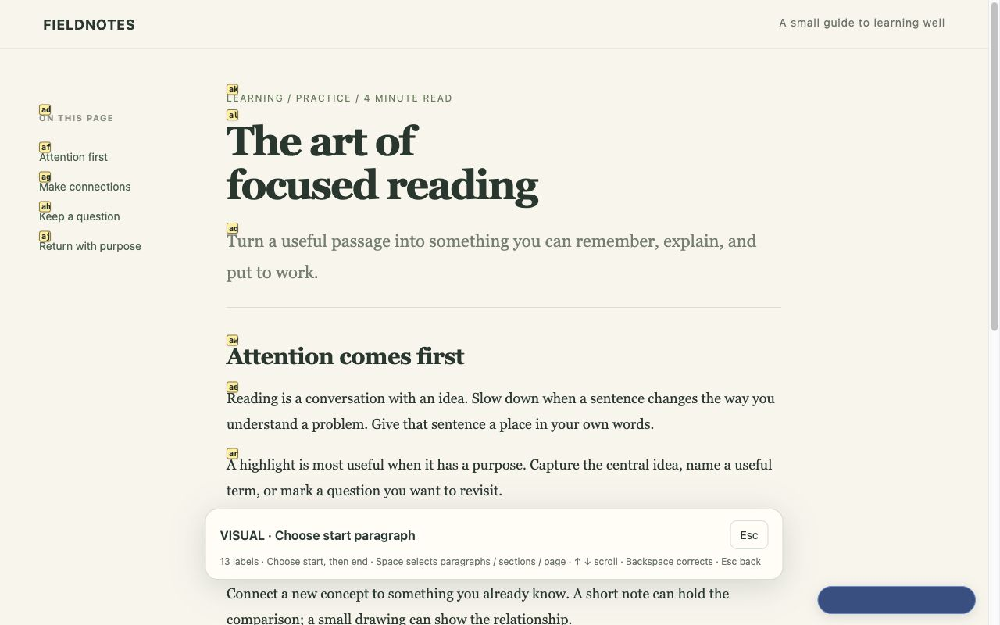

Read deeply.
Make it yours.
Navigate with Vim-style keys. Pick passages by their labels. Keep highlights, notes, and drawings beside the ideas that inspired them.
Get started View the repositorymacOS / Linux beta. Requires Chrome 131+, Python 3.11+, Git, and a separate local helper. Version 1.6.1 is available in the Chrome Web Store; the 1.6.2 update requires Google review. The helper is required for saving.
Move from typing to reading, smoothly.
Ctrl+C leaves a website text field and returns to Normal. Use gi or 2gi to focus fields, gI to choose a visible field by label, and Space p p to play or pause media. Hello Interview article transitions now keep section jumps, highlights and notebooks connected to the right page.
See the release and downloads →Choose it.
Keep it.
Press v, type the start and end labels, then copy, highlight, or add a note. Select words, paragraphs, sections, or readable page text.
A notebook
for every page.
Open your page notes alongside the text. Sketch in a floating Excalidraw notebook; resize, dock, or maximize it as you think.
Your files.
Your library.
Annotations and drawings live in ~/.study-keys, organized by page. Export backups or use your own Git workflow. No account or sync service.
A small set of keys. A calmer reading flow.
Page marks use ma and 'a. Capital-letter marks travel across tabs. Press i to pass keys through to the website; Ctrl+C returns to Normal mode.
Use gi, 2gi or 3gi to focus a field by number, or gI to label visible text fields. Native Tab / Shift+Tab move between controls. Ctrl+C returns to Normal without changing your draft. Space p p plays or pauses the current page’s video or audio.
Normal-mode commands keep the whole key press with Study Keys, so selecting passages does not also activate a media page’s playback shortcuts. Reload open tabs after updating. An older connected tab shows a reload-to-reconnect prompt so you can finish website edits first.
Try the reading demo after installing

Your local documents, too.
Open HTML files directly, or render Markdown with Markdown Viewer. Enable Allow access to file URLs in Study Keys’ extension details; Markdown Viewer needs its own file access enabled. Highlights, notes, notebooks and reading positions work on the rendered document.
The companion saves annotations under ~/.study-keys/pages/local-files/. It leaves source files unchanged and does not scan folders. The companion from 1.6.0 or 1.6.1 also works with 1.6.2; no helper reinstall is needed for this update.
Study with your agent. Keep one notebook.
The companion includes an optional MCP connection. Your agent can read a requested page, add selective highlights and explanatory notes, and build editable learn-by-layers diagrams in the page’s existing Excalidraw notebook. Your manual work remains in the same canvas.
Choose Codex (MCP + skill) during companion setup to install both integrations, enable AI access, then start a fresh Codex session and use $study-keys https://example.com/article. The same setup offers Cursor and Claude Desktop MCP configuration.
Already have MCP configured? Install or update just the skill from the repository with python3 native/install_skill.py or npm run install:skill. Customized copies are backed up before replacement. Skill setup and usage →
AI access is off by default and can be revoked in setup. The local connection has no network listener; your chosen cloud agent may send requested page content to its model provider. See privacy and data use. Chrome and the companion must be running; AI access currently covers reading, annotations and drawings.
Set up once. Keep learning.
- Install from the Chrome Web Store or download the latest beta release. For 1.6.2 before store approval, extract the extension ZIP and load its folder using chrome://extensions → Developer mode → Load unpacked.
- Open Study Keys → Set up local folder from the toolbar. Download the local helper ZIP and extract it.
- In a terminal in that folder, run the exact command shown on the setup page. It includes your extension’s ID.
- Click Check connection, then reload your reading tabs. Disable other Vim keyboard extensions to avoid conflicts.
The helper creates ~/.study-keys, initializes a local Git repository, and registers access for this extension. It does not add a remote, commit, or upload your library.
Optional vertical-tabs control on macOS: update the helper, then append --enable-vertical-tabs to its install command. Enable vertical tabs in Chrome and grant Chrome Accessibility access when macOS requests it. The helper only clicks Chrome’s native Expand Tabs / Collapse Tabs button while Chrome is foreground. This optional action is unavailable on Linux and in Codex’s browser; normal navigation, notes, and drawing features do not need it.
Switching from an unpacked copy to the store version will require running the setup command again for the new extension ID. Your existing library stays in place.
Built for ordinary web pages.
Browser-internal pages, Chrome’s PDF viewer, embedded frames, closed shadow roots and canvas-rendered text are outside this beta’s scope. Saved highlights need matching text to reappear after a page changes. Very large pages and annotations have size limits.
If the helper is disconnected, cached notes remain readable, and saves report an error. Make regular backups of your local folder.